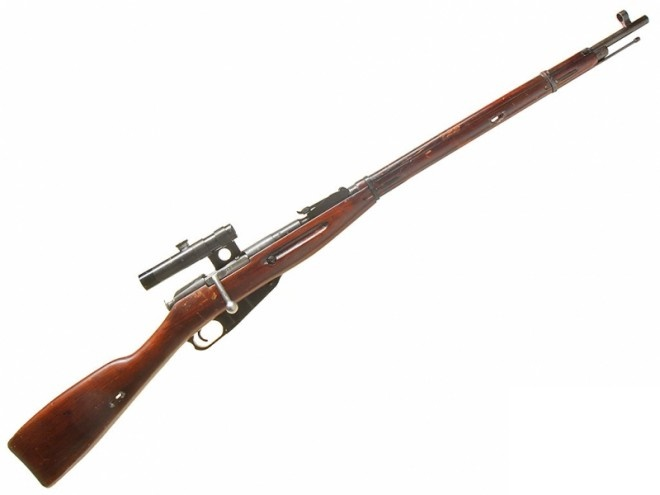
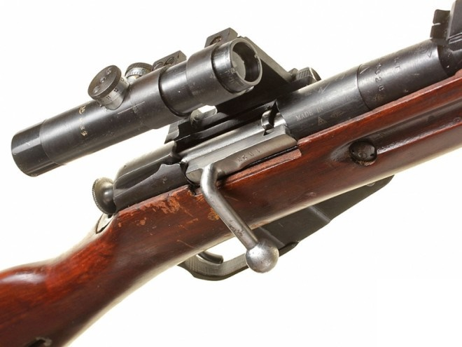
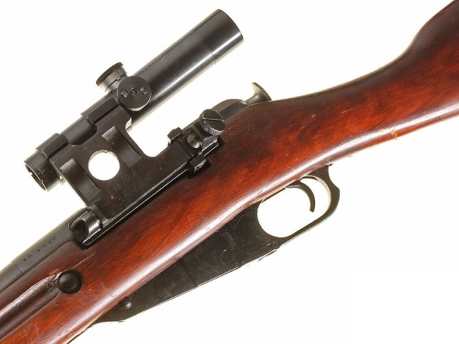
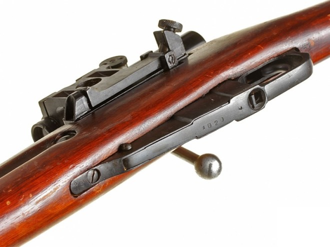

Карабин отечественный 1938 года

Снайперская модификация карабина системы Мосина образца 1938 года, изготовленная на Ижевском оружейном заводе в 1943 году. С приливом под прицел и загнутой рукояткой затвора, хзарактерной только для снайперского варианта. Оригинальное воронение, дерево в очень хорошем состоянии. Оптический прицел ПУ также в превосходном состоянии, полностью исправная оптика.
Оружие деактивировано, все основные части выведены из боевого состояния без возможности восстановления.
С развитием оружейных и общих технологий в конце 19 века в стрелковом оружии наметился новый, качественный скачек в развитии длинноствольного индивидуального оружия - появление бездымных порохов обеспечивало переход к уменьшенным калибрам, а в сочетании с развитием технологий - еще и создание приемлемых систем с магазинным питанием на замену однозарядным системам. В Российской Империи соответствующие изыскания были начаты еще в 1883 году, для чего была создана специальная комиссия при Главном Артиллерийском Управлении Генерального Штаба. В результате длительных испытаний к 1890 году в финал вышли две системы магазинных винтовок - отечественная, разработки капитана С.И. Мосина, и бельгийская, разработки Леона Нагана. По результатам испытаний в 1891 году на вооружение была принята винтовка, представлявшая собой более или менее базовую конструкцию Мосина с некоторыми (не слишком значительными, но тем не менее имевшимися) заимствованиями из системы Нагана. В частности, по некоторым данным, у Нагана были заимствованы конструкция подавателя магазина и пластинчатой обоймы. Винтовка была принята на вооружение под обозначением "3-линейная винтовка образца 1891 года". 3 линии в старинной русской системе мер равны 0.3 дюйма, или 7.62мм. Вместе с винтовкой был принят и новый трехлинейный (7.62мм) патрон, ныне известный как 7.62х54мм R. Патрон был разработан русским конструктором Велтищевым на основе французского патрона 8х56мм R от винтовки Лебеля и имел гильзу бутылочной формы с выступающей закраиной, заряд бездымного пороха и тупоконечную оболочечную пулю. Конструкция гильзы с закраиной, уже тогда начавшая устаревать, была принята из соображений низкого уровня развития оружейной промышленности России - изготовление патронников под такую гильзу, да и самих гильз, может производится по менее строгим допускам, нежели требуются при использовании гильз без выступающей закраины. Это решение, имело на тот момент под собой определенную экономическую и военную базу - создание и внедрение патрона без закраины, по типу немецкого патрона обр1888, обошлось бы дороже и потребовало бы больше времени. Однако, в силу различных исторических обстоятельств, последующей смены конструкции патрона на более прогрессивную (произошедшую в других развитых странах самое позднее к концу 1920х годов) так и не произошло, и вплоть до сегодняшнего дня отечественные конструкторы вынуждены ломать голову при создании автоматических систем под безнадежно устаревший патрон.

Изначально винтовка обр. 1891 года была принята на вооружение в трех базовых вариантах, мало отличавшихся между собой. пехотная винтовка имела длинный ствол и штык. Драгунская (кавалерийская) винтовка имела чуть более короткий ствол и также снабжалась штыком, кроме того, у драгунской винтовки был изменен способ крепления ружейного ремня (вместо антабок сделаны сквозные отверстия ложе). Казачья винтовка отличалась от драгунской только отсутствием штыка. Штык для винтовки обр.1891 года также был принят несколько устаревшего образца - игольчатый, с креплением при помощи трубчатой муфты, одеваемой на ствол. Штык имел квадратное сечение с небольшими долами по бокам, острие заточено на плоскость, и могло использоваться как отвертка при разборке оружия. Главным недостатком системы, исправленным лишь в 1938 году, было то, что штык всегда должен был носиться примкнутым к винтовке, в боевом положении. Это делало и так довольно длинную винтовку еще более неудобной в переноске и маневре, особенно в стесненных обстоятельствах (в окопах, в густом лесу и т.п.). Все винтовки (кроме казачьей) пристреливались с примкнутым штыком, и снятие штыка приводило к существенному изменению боя винтовки. Кроме того, крепления штыков со временем имели тенденцию к разбалтыванию, ухудшая точность стрельбы (недостаток был устранен только в модификации 1930 года). Ранние образцы винтовок отличались отсутствием ствольных накладок и имели открытый сверху по всей длине ствол. С 1894 года были введены деревянные верхние накладки, предохранявшие руки стрелка от ожогов о горячий ствол. Так как на момент принятия на вооружение отечественные производства еще не были готовы начать выпуск новых винтовок, первоначальный заказ был размещен во Франции, на арсенале в городе Шательро. Серийное производство винтовок на Сестрорецком оружейном заводе под Петербургом под руководством самого Мосина началось в 1893-94 годах, в Туле и Ижевске несколько позже. В ходе Первой Мировой войны из-за неспособности Российской промышленности восполнить потери на фронте, пришлось заказывать винтовки в США. Заказы были размещены на заводах фирм Ремингтон и Вестингауз в 1916 году. После октябрьской революции 1917 года значительная часть винтовок осталась в США и была продана на гражданском рынке оружия или использовалась для первоначального обучения солдат в армии. Внешне винтовки американского заказа, кроме маркировки, отличались от отечественных материалом ложи - они имели ореховые ложи вместо березовых.

Первую модернизацию винтовки образца 1891 года перенесли в 1908 - 1910 году, когда в связи с принятием на вооружение нового варианта патрона с остроконечной пулей и улучшенной баллистикой винтовки получили новые прицелы. Кроме того, были внесены и другие незначительные изменения, вроде новой конструкции ложевых колец. Новые винтовки получили обозначение образец 1891-10 года и во всех трех вариантах служили вплоть до 1923 года, когда командование Красной Армии в целях унификации приняло решение оставить на вооружении только драгунскую винтовку, которая и оставалась основным индивидуальным оружием пехоты вплоть до 1930 года. В 1930 происходит очередная модернизация, и снова - лишь частичная. Изменяются способ крепления шомпола и штыка, но последний по прежнему постоянно должен быть примкнут к винтовке. Винтовка (к этому моменту уже официально известная не как безымянный "образец", а винтовка системы Мосина) получает новые прицельные приспособления, градуированные в метрах, а не устаревших аршинах. Снова меняется конструкция ложевых колец. Под обозначением "винтовка системы Мосина обр 1891-30 года" это оружие становится основным для Красной армии на предвоенный период и большую часть Великой Отечественной войны. В дополнение к винтовке обр 1891-30 годов в 1938 году на вооружение принимается укороченный карабин образца 1938 года, отличавшийся (кроме меньшей длины ложи и ствола) еще и отсутствием штыка. В 1944 году происходит последняя модернизация уже изрядно устаревшей системы - на вооружение принимается карабин обр 1944 года, отличавшийся от карабина 1938 года наличием складного вбок неотъемного штыка, что все-таки было прогрессом по сравнению с предыдущими вариантами. Карабин 1944 года заменяет в производстве и винтовку обр 1891-30, и карабин обр 1938 года, как оружие, более пригодное для современной маневренной войны. По окончании Второй Мировой войны производство винтовок системы Мосина продолжается до конца 1940х годов, после чего часть станочного парка и оборудования передается Польше. Кроме России / СССР, винтовка системы Мосина состояла на вооружении еще в ряде стран, в том числе в Польше, Югославии, Венгрии, Китае, Северной Корее и Финляндии. Причем последняя не только получила некоторый запас винтовок образца 1891-10 года при развале Российской империи в 1917, но и захватила довольно большое количество винтовок обр 1891-30 годов в ходе "северной" войны между СССР и Финляндией в 1940 году. Кроме того, Финляндия и сама производила винтовки Мосина. Вплоть до настоящего времени винтовки Мосина пользуются определенной популярностью среди гражданского населения экс-СССР (да и других стран) за малую стоимость, хорошие баллистические данные и доступность патронов.

Прицел ПУ (прицел укороченный) был разработан в 1940 году для установки на снайперский вариант СВТ-40 и в этом же году принят на вооружение. В 1942 году производство СВТ-40 было прекращего, после чего прицелы ПУ стали изготовливать для снайперского варианта винтовки Мосина образца 1891/30 года. Для крепления к винтовке Мосина был разработан кронштейн образца 1942 года (конструкции Кочетова), а в самих прицелах была заменена шкала вертикальных поправок. Всего до конца войны было выпущено более 500 000 прицелов. ПУ оказался настолько удачным и востребованным, что его выпуск не прекращался и после войны.